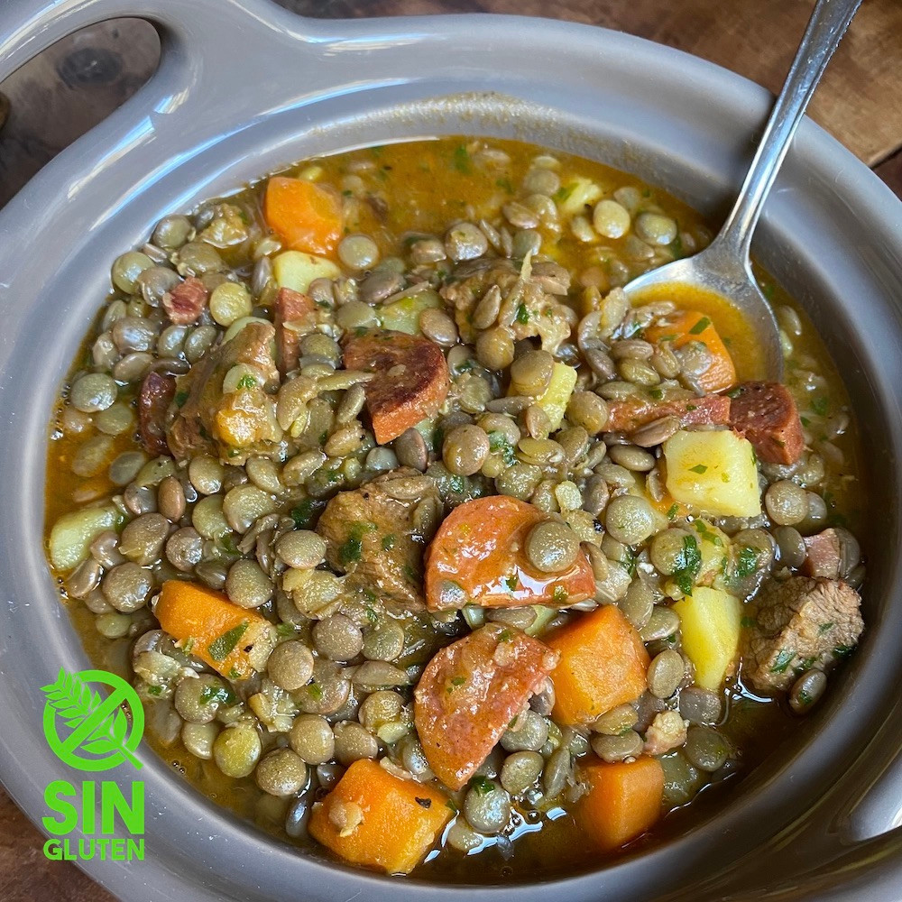

Lentils

This type of lentils is a traditional family dish from Spain.
Dish Characteristics
The dish takes 40 minutes to be ready and no need of oven.
Ingredients
- Lentils
- 1/2 Onion
- 300gr Bacon
- 200 gr Chorizo
- Half glass of rice
- 100 gr of flour (optional)
Cooking Steps
- Place frying pan at a temperature of 6 out of 10
- Pour a teaspoon of oil in a frying pan
- Chop onion and chorizo into nail size pieces
- Leave onion and chorizo in the pan until golden color
- Boil the pasta for 10 minutes
- Once chorizo and onions are golden pour tomatoe sauce
- Leave tomato mix in fire until a bit less liquid
- Place pasta with tomato mix for 5 minutes and it will be ready
Back to Index